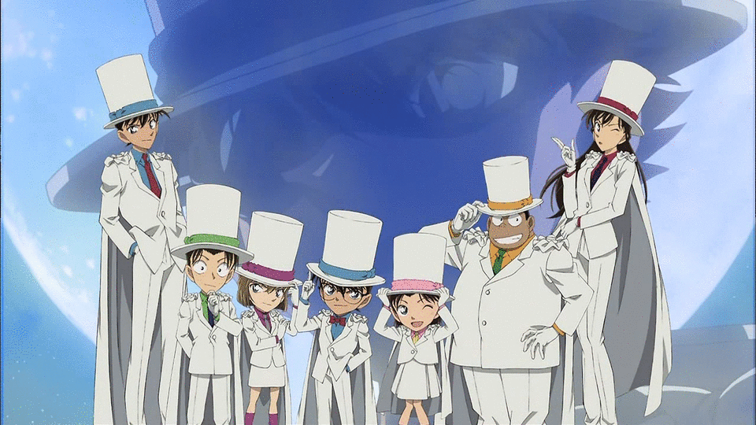

主角工藤新一原本是一位經常幫助警方破案的17歲高中生偵探。
某一天和青梅竹馬的女朋友毛利蘭在熱帶樂園遊玩時目擊黑暗組織的可疑行動，獨自前往交易現場時卻遭另一名同夥從背後偷襲擊昏，並灌下代號為「APTX-4869」的神秘藥物。
後來雖然倖免於死，但身體就此縮小為小學一年級時的模樣；情急之下化名為江戶川柯南，在鄰居阿笠博士的建議下，寄住在毛利蘭的父親毛利小五郎家中。
同時他也憑藉著過人的推理能力，以及使用阿笠博士為他發明的各種道具，讓小五郎成為全國知名的名偵探，並藉由平時的案件調查找尋有關黑暗組織的線索。